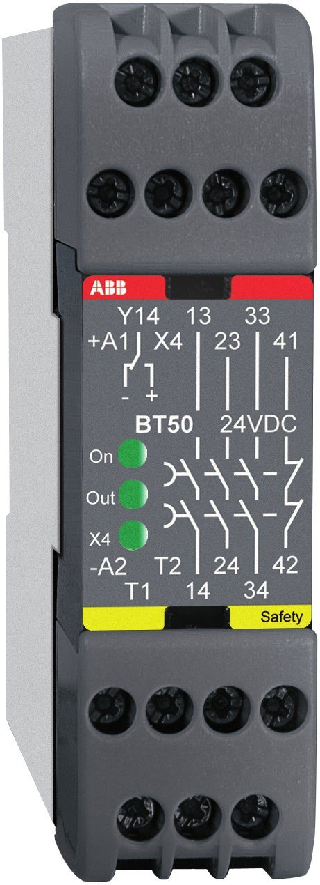
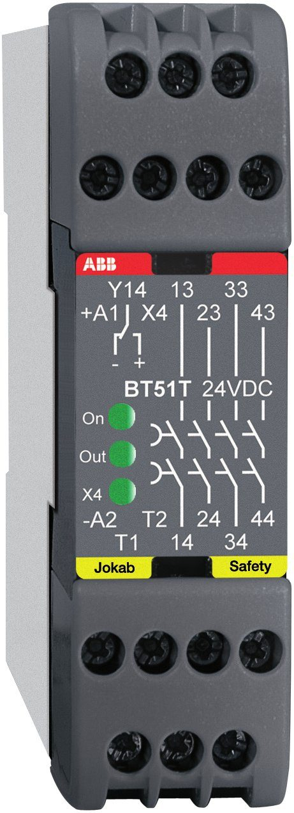

السيفتي PLC · الدرس 6 من 13
ريلايان صغيران بلا مداخل قنوات: الطوارئ في التغذية نفسها. يُستخدمان غالبًا لزيادة مخارج الأمان بعد RT9 أو Pluto.

ريلايات صغيرة عرضها 22.5 mm، لكنها ليس لها مداخل قنوات. الطوارئ نفسه يوضع في تغذية الريلاي (A1)، فإذا ضُغط انقطعت التغذية وفصل الريلاي.

داخله ريلايان K1 وK2 تلامساتهما على التوالي في كل خرج. عندما تصل التغذية إلى A1 ويُغلق X4 يعمل K1 وK2 وتُغلق المخارج. بعد ذلك يمكن أن يُفتح X4 مرة أخرى ويبقى الريلاي شغالًا.
إذا انقطعت التغذية عن A1 (ضغط الطوارئ أو فُتح الباب) يفصل K1 وK2. ولا يعملان مرة أخرى إلا بعد أن يفصل الاثنان فعلًا، فإذا التصق أحدهما رفض الريلاي العمل.
دخل X4 يُستخدم لمراقبة الكونتاكتورات الخارجية: NC من K1 وK2 على التوالي مع زر START.
الـ RT9 له خرجا أمان فقط، والـ Pluto له Q0 وQ1. لو عندك 6 محركات خطرة تحتاج مخارج أكثر. الحل: تغذّي A1 في الـ BT50 من خرج أمان في الـ RT9 أو الـ Pluto، فيصبح عندك 3 أو 4 مخارج جديدة تفصل مع الجهاز الأساسي.
وللمستوى الأعلى: يأتي A1 من خرج أمان، ويوصَّل A2 إلى 0V عن طريق خرج أمان ثانٍ، فتصبح قناتين.
الطوارئ والبابان هنا على التوالي في تغذية A1. شغّل بـ START، ثم افتح بابًا ولاحظ انطفاء On.
أجب إجابة صحيحة عن 5 من 6 على الأقل ليُسجَّل الدرس مكتملًا.
الأطراف والأرقام هنا من كتالوج ABB Jokab Safety (Safety Relays). قبل التطبيق على ماكينة حقيقية ارجع إلى الكتالوج وتقييم المخاطر الخاص بالماكينة. يُحفظ تقدّمك على هذا الجهاز فقط.
© LearnElectricals